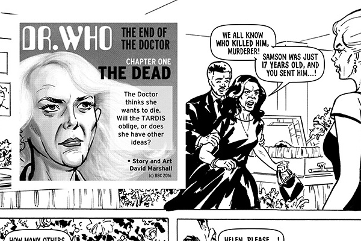
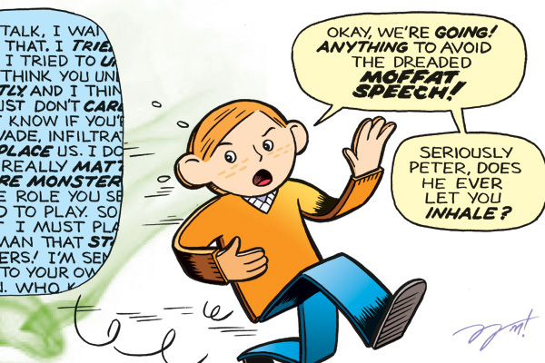
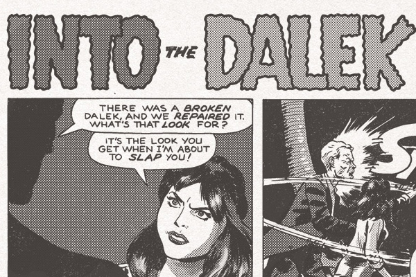

Doctor Who fan art
Fan art and comics about a two-hearted alien who travels through space and time in a capsule that's smaller on the outside

End of the Doctor
Recovering from a crushing defeat, Doc winds up in an Ogron war zone.

Flatline (Flat Stanley)
The Gabby Gallifreyan was in full swing in this episode.

The Time of the Doctor (Handle's Revenge)
Public display of beheaded enemies is more Vlad the Impaler than rebel Time Lord.

Into the Dalek (Next Time Try Words)
Sticking up for the hen-pecked Time Lord.
DOCTOR WHO and all related characters & elements are trademarks and copyrights of BBC. All other trademarks referenced herein are the properties of their respective owners.